| 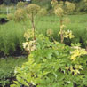 |
Angelica Root (Angelica
archangelica)
certified organic crop (Ecocert)
Extraction method: steam distillation from the root
The earthy-green fragrance of the angelica root promotes vitality
and has strong rejuvenating and fortifying qualities. It strengthens
the nervous system and gives incentive to face difficult problems.
The oil is very potent and should therefore be used sparingly.
Caution: 

|
| 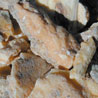 |
Benzoin Siam (Styrax tokinensis)
certified organic crop
Extraction method: alcohol extraction from the resin
The scent obtained from benzoin resin is warm, balsamic and
sweet, reminiscent of vanilla and chocolate. Benzoin gives security,
protection and warmth and is a real «balsam for the soul».
A soothing remedy for all skin complaints. An ideal natural
fixative for perfumes. |
| 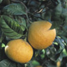 |
Bergamot (Citrus aurantium
bergamia)
certified organic crop (AIAB)
Extraction method: cold pressed from the fruit peel
This citrus fruit flourishes in the intense sun of southern
Italy. Our Bergamot comes from a small co-operative, which produces
an excellent organic oil with a fruity, tangy, bitter-sweet
citrus aroma. Bergamot is the ideal essential oil to raise low
spirits and calms people suffering from anxiety. It effectively
refreshes and uplifts. Caution:
|
| 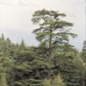 |
Cedarwood, Atlas (Cedrus atlantica)
certified organic crop (Ecocert)
Extraction method: steam distillation from the heartwood
We use exclusively waste wood from cedars in southern France
for oil extraction. Cedar oil exudes a balsamic warmth and embodies
strength, self-esteem and tenderness. It has a soothing effect
on the respiratory system. It is used as a hair and scalp tonic
and is known to deter moths and other insects (mosquitoes etc.).
|
| 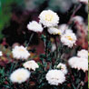 |
Chamomile, Roman
(Chamaemelum nobile)
certified organic crop (Demeter)
Extraction method: steam distillation from the flowers
The fruity-light aroma of the «true» chamomile is
a reflection of the fields of Piedmont. The blossoms are comparable
to the sun, whose golden rays are able to penetrate and dissolve
the most deep-seated tension. Chamomile is profoundly relaxing
and harmonising. It is also a comforting oil easing nervous
tension and anxiety and allays worries. Caution:  |
| 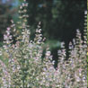 |
Clary Sage (Salvia sclarea)
certified organic crop (Demeter)
Extraction method: steam distillation from the flowering tops
and leaves
This tall-growing plant has large, hairy leaves and delicate
lilac flowers, which exude a highly aromatic scent. The bright,
clear fragrance with a hint of herbaceousness has a euphoric
and sensuous character. The oil has a very relaxing, balancing
and invigorating effect. A useful oil for women, especially
for menstrual problems and during menopause (see specialist
literature). Caution: |
| 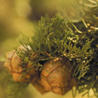 |
Cypress
(Cupressus sempervirens)
certified organic crop
Extraction method: steam distillation from the twigs
These trees are a characteristic feature of the landscapes of
Tuscany and Provence. It is a tangy-balsamic scented oil, which
conveys dignity, courage and determination. Cypress has a calming,
balancing effect, enforces comfort and peace, cleanses the spirit
and aids concentration. Three drops on a handkerchief can help
in stressful situations. It is very good combined with lemon.
|
| 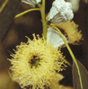 |
Eucalyptus Globulus
(Eucalyptus globulus)
certified organic crop
Extraction method: steam distillation from the twigs and leaves
The best known essential oil is extracted from the «blue-leaved»
eucalyptus tree and is rich in cineol and eucalyptol. It works
most effectively on the respiratory system and it is excellent
against winter ailments. A good oil for freshening and purifying
the air. Caution:


|
| 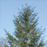 |
Fir Needle, Silver (Abies
alba)
certified organic crop
Extraction method: steam distillation from the young twigs
This essential oil comes from an organic supplier in the woodlands
of the Massif Central in France. It is one of the most pleasant
scents of the forest. It is literally the «pure smell
of wood». It helps clear the airways and is balsamic and
decongestant. It is invigorating and stimulating. It counters
tiredness and lack of energy. |
| 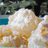 |
Frankincense
(Boswellia carterii)
wild crop
Extraction method: steam distillation from the resin
The spicy aroma radiates a sense of spiritual cleanliness and
purity, which has been recognised by all cultures and is reflected
in its widespread use in churches and rituals today. The essential
oil is suitable for meditation and for quiet moments, inner
reflection and establishing a sense of calm. Used in skincare
it is effective against wrinkles and tired, listless skin. |
| 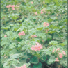 |
Geranium (Pelargonium graveolens)
Egypt, certified organic crop (BCS)
Extraction method: steam distillation from the leaves
The fragrance of the geranium is sweet and floral with a strong feminine note. It has a balancing, invigorating, relaxing and spiritually stimulating effect. Strengthens self-awareness, quells anxiety and puts the mind back into balance, and promotes harmony. It is beneficial for all kinds of skin conditions. |
| 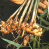 |
Ginger (Zingiber
officinalis)
certified organic crop
Extraction method: steam distillation from the roots
Ginger is a very warming and stimulating oil and it is known
for its aphrodisiac properties, as well as easing muscle tension.
It also tones and settles the digestive system. For late risers,
two drops of ginger massaged into the soles of the feet can
work wonders to sharpen the senses. |
| 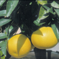 |
Grapefruit (Citrus paradisi)
best conventional quality
Extraction method: cold pressed from the fruit peel
This wonderful citrus oil is obtained from the peel of the
ripe fruit.
Grapefruit conveys a zest for life and lightness of spirit,
and has euphoric, purifying and refreshing properties. It
nourishes the tissue cells and increases the supply of blood
to the skin. It is helpful for greasy hair and oily skin.
Said to increase concentration.
|
|
|
continue H - O > P -
Z > |